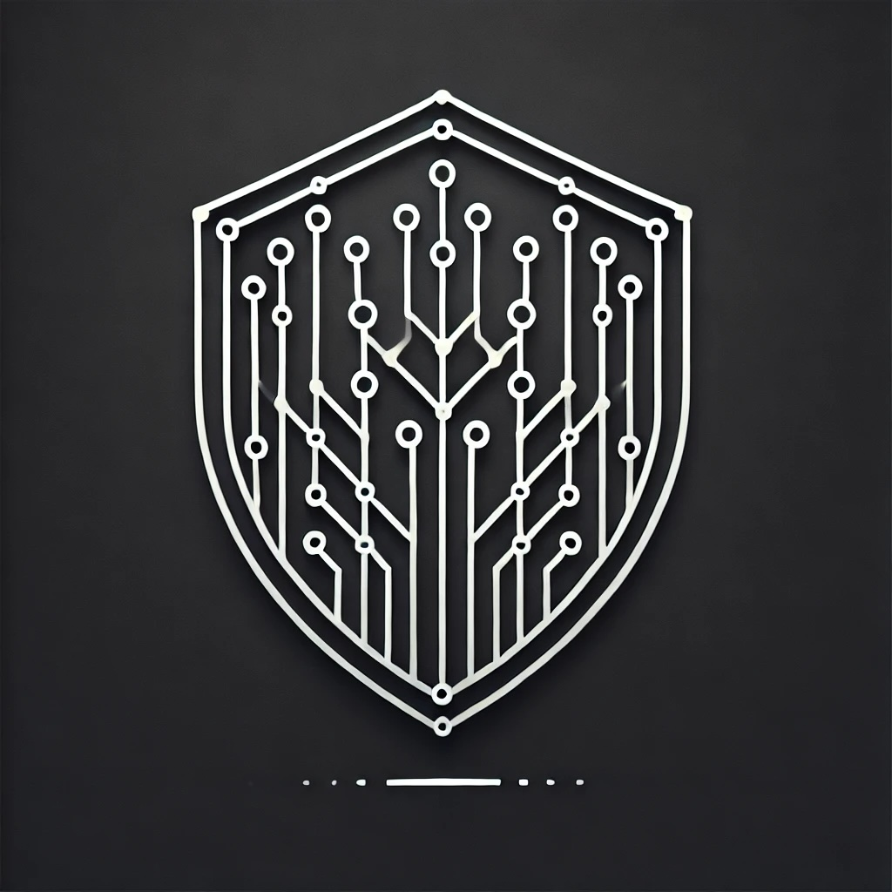
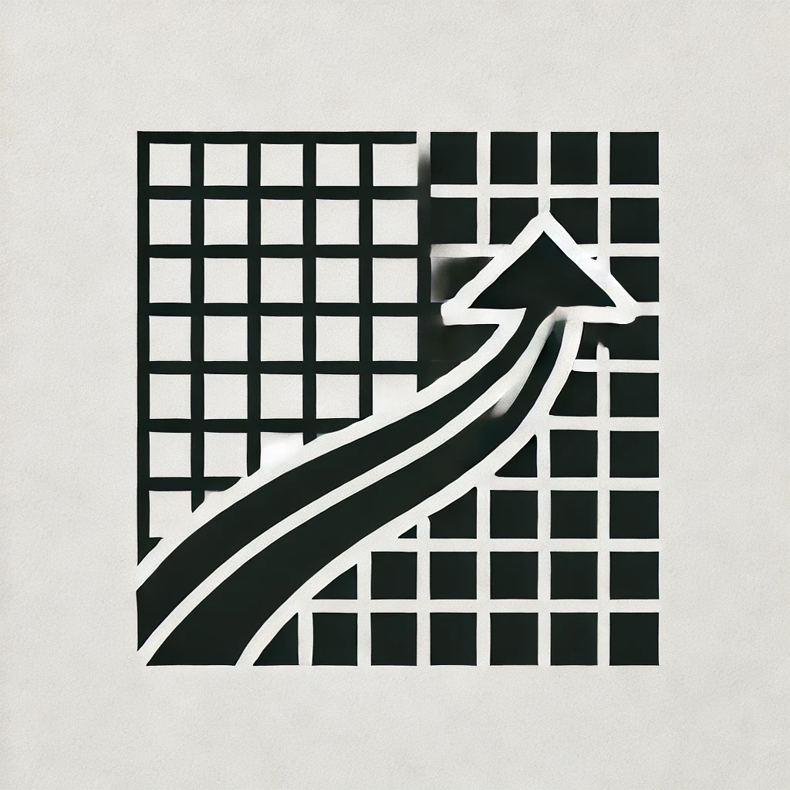
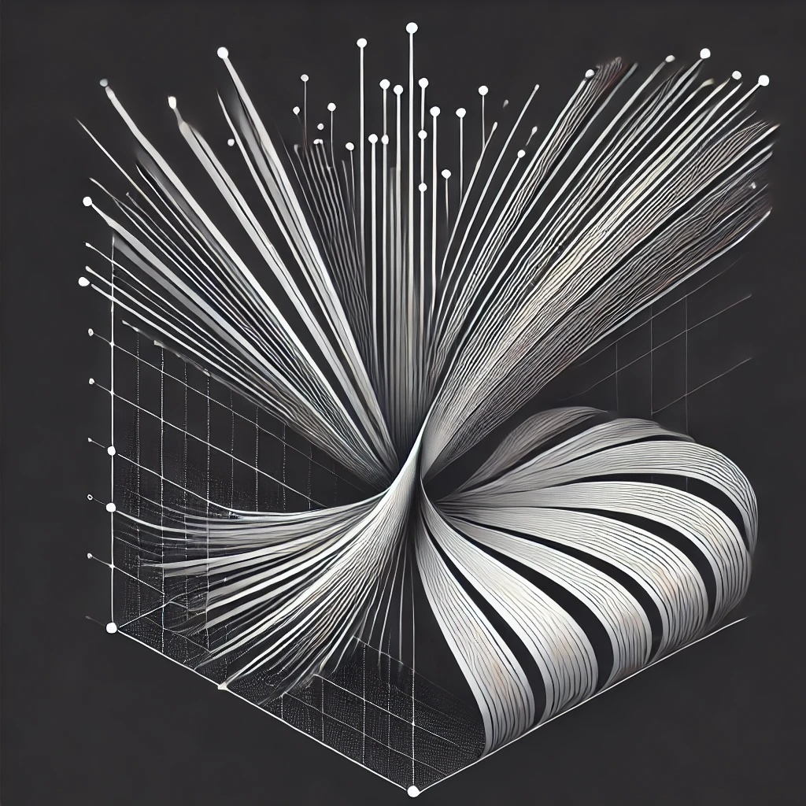

Software Engineer & AI Architect
Crafting high-performance systems in Go and Rust, with a focus on machine learning infrastructure and distributed systems. Passionate about building scalable solutions that bridge systems engineering and artificial intelligence.
High Performance Systems
Building optimized systems using SIMD, concurrent processing, and advanced algorithms for maximum efficiency.
View Projects
Security Engineering
Developing robust security monitoring systems with real-time analysis and ML-powered threat detection.
Learn More
Systems Programming
Implementing low-level system components with a focus on memory safety and performance optimization.
View Details
AI Architecture
Designing and implementing scalable machine learning infrastructure and production AI systems.
Explore
Featured Projects
Custom Vector Implementation
In Progress
Rust
Memory Management
Systems Programming
A low-level implementation of Rust's vector type, focusing on memory management and safety guarantees. Currently implementing core functionality and iterator support.
View Project →Network Security Agent

Go
ML
Security
High-performance network security monitoring system with real-time traffic analysis and ML-based anomaly detection.
View Project →

Rust Sudoku Solver
Rust
SIMD
Algorithms
High-performance Sudoku solver utilizing SIMD optimization techniques and modern API integration for enhanced solving capabilities.
14.53ms
Avg Solve Time

Go Embeddings Library
Go
Machine Learning
Distributed Systems
A high-performance library for embedding machine learning models in Go applications.
View Project →Technical Proficiencies
Languages
- Go
- Rust
- Python
- JavaScript/TypeScript (Learning)
Technologies
- Machine Learning
- Network Security
- Distributed Systems
- API Design
Tools & Frameworks
- TensorFlow
- Docker
- Git
- CI/CD